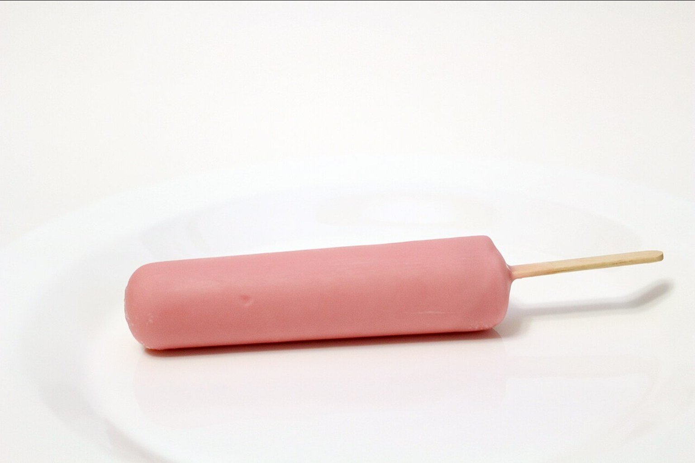

해태 봉봉 — 편의점 캔 음료
해태 봉봉은 과육이 들어 있는 캔 음료로, 포도·오렌지 등 맛이 있습니다. 편의점 음료 코너에서 흔히 볼 수 있어요.
팁
마시기 전에 가볍게 흔들거나, 과육이 밑에 가라앉았는지 확인하세요. 냉장 코너 제품이 더 시원합니다.

해태 봉봉은 과육이 들어 있는 캔 음료로, 포도·오렌지 등 맛이 있습니다. 편의점 음료 코너에서 흔히 볼 수 있어요.
마시기 전에 가볍게 흔들거나, 과육이 밑에 가라앉았는지 확인하세요. 냉장 코너 제품이 더 시원합니다.